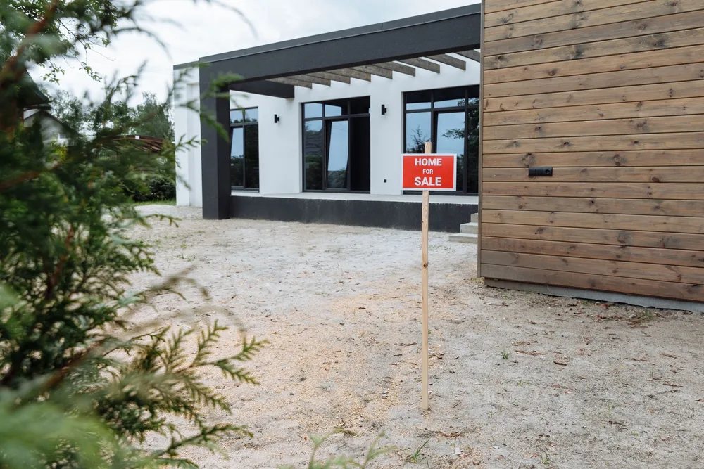
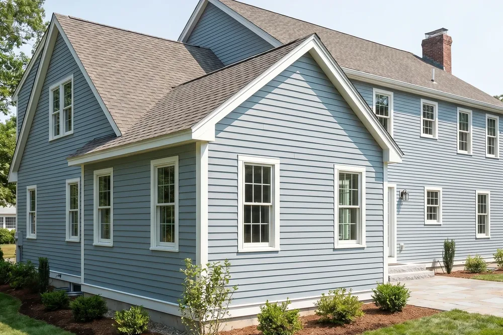
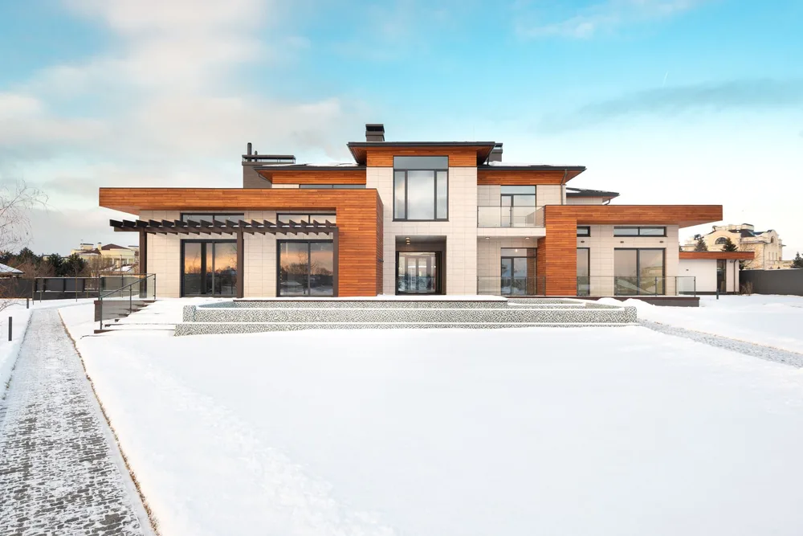
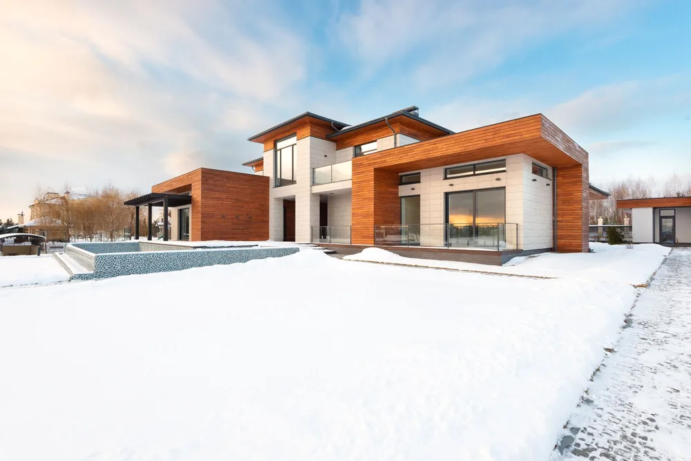
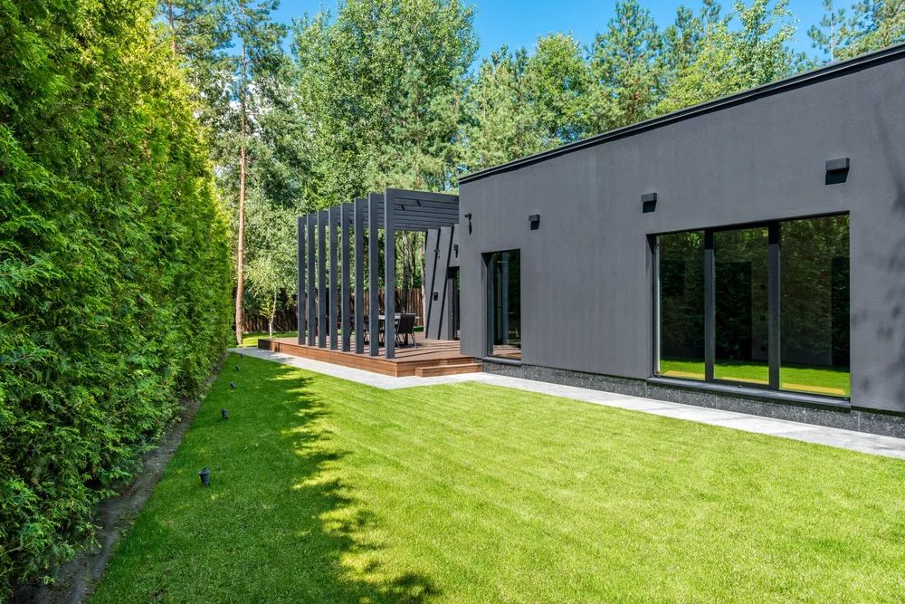

Essex, MA (the town on Cape Ann)
Home addition builder in Essex MA, planned and built by DeFaria
Home addition builder in Essex MA projects start with a written plan and an owner-led walkthrough. Essex home addition projects from DeFaria Construction add space to antique Capes, Colonials and waterfront homes in Essex, Massachusetts, with flood, septic and design questions answered before the estimate.
Our work
See a real DeFaria transformation
A quick look at one of our before and after projects.
Get a Free Estimate
Local search focus
Essex home additions start with how the new space meets the old.

Across Essex Village, South Essex, Conomo Point and Centennial Grove, Essex mixes antique Colonial, Federal and Cape homes tied to its shipbuilding past with newer single-family and waterfront properties near the Essex River. A Essex addition has to match the roofline, siding and structure of the existing home, so it reads as part of the house, not a box bolted on.
This page is built for Essex homeowners comparing home addition contractors near them. It connects the Essex search to project photos, neighborhoods, the full addition scope and a direct estimate path.
- Clear estimate conversations before the project starts.
- Direct communication with the homeowner from walkthrough to final walkthrough.
- Local coverage across Essex and the wider Essex County area.
The town of Essex, Massachusetts
Planning a home addition in Essex, MA near the river and the marsh

This page is for the town of Essex, Massachusetts on Cape Ann, not Essex County, New Jersey or other places named Essex. Homes in Essex range from antique Colonials, Federals and Capes tied to the town's shipbuilding past to newer waterfront houses near the Essex River and Conomo Point.
Those settings bring specific rules. Lots near the river and salt marsh can sit in a FEMA flood zone, which affects foundation height and construction, and work near wetlands needs Conservation Commission review. Many Essex homes use septic systems, and under Title 5 a bedroom addition can require a septic review with the Board of Health. DeFaria confirms all of this before designing, so the addition is sized to what the lot allows.
On antique homes, the addition has to respect the original massing: a lower connector, matching roof pitch and trim that fits the period. Permits run through the Town of Essex Building Department.
Choosing a home addition builder in Essex comes down to a few questions worth asking any contractor: who will actually run the job day to day, how the addition will be tied into the existing roof and foundation, how flood, wetland and septic approvals will be handled, and how the price is broken down. At DeFaria Construction the project is owner-led by Luiz DeFaria, the estimate is itemized, and those approvals are planned before construction instead of discovered during it.
- Flood zone and Conservation Commission checks near the river and marsh
- Septic and bedroom-count review under Title 5
- Additions scaled to antique Capes, Colonials and Federals
- Waterfront additions built for coastal weather
The scope
What a full Essex home addition covers
In Essex, antique Colonial, Federal and Cape homes tied to the town's shipbuilding past often add layout and access constraints.
- Structure and roof designed to connect cleanly to the current home.
- Siding, windows and trim matched to the existing exterior.
- Interior systems and finishes coordinated across old and new space.
Essex permits and inspections run through the Town of Essex Building Department, and DeFaria keeps that step organized so scope and timeline stay realistic.
Cost
How much does a home addition cost in Essex?

For a Essex addition, budget around $150 to $350 per square foot, so a room addition is often $60,000 to $150,000 and a bigger build more. The estimate follows the real scope, never a flat number.
- How many square feet the addition adds.
- Foundation work and whether you build out or up.
- Matching the roof, siding and trim to the current house.
- The finish level inside the new space.
Because antique Colonial, Federal and Cape homes tied to the town's shipbuilding past often add layout and access constraints in Essex, hidden conditions behind the walls are priced honestly at the walkthrough, not discovered mid-project.
DeFaria gives a fixed, itemized Essex estimate at the walkthrough, so the price matches the actual scope instead of a guess.
Process
How a Essex home addition runs, step by step

A Essex home addition moves through set stages, so you can see what comes next.
- Design walkthrough and an itemized estimate.
- Permitting and zoning with the town.
- Foundation, framing and structural tie-in.
- Roofing, windows and weather protection.
- Siding and trim matched to the existing exterior.
- Rough-in, insulation and drywall.
- Finish carpentry, paint and a final walkthrough.
DeFaria coordinates the Essex permit with the Town of Essex Building Department before the rough-in, and keeps you updated at each step.
Plan on about 8 to 16 weeks for a Essex addition once permits are in, depending on size and finish.
Materials
Materials and finishes that hold up in Essex additions

In Essex County, an addition has to handle cold winters and weather, so the framing, insulation and siding are chosen to endure.
- A foundation and framing sized for the new load and tied to the home.
- Insulation and weather barriers rated for Massachusetts winters.
- Siding, roofing and trim matched to the existing exterior.
- Windows and finishes that fit the age and style of the house.
From Essex Village to Conomo Point, antique Colonial, Federal and Cape homes tied to the town's shipbuilding past often add layout and access constraints, which is exactly why the finish is specified for the home rather than a catalog.
When to remodel
Signs it is time to add on in Essex

A few clear signs a Essex home is ready for an addition:
- Running short on bedrooms, baths or storage.
- Wanting an in-law suite, office or family room.
- A footprint that cannot stretch any further inside.
- Choosing to stay and expand rather than move.
- Building equity with more finished square footage.
These come up often in Essex homes near Essex Village and South Essex.
Addition Types
Home Addition Options for Essex Homeowners
When Essex homeowners call us about more space, we start by naming the four paths: room addition, bump-out, second-story, and in-law suite or ADU. Each one carries a different cost, timeline, and permitting path, and the wrong pick wastes money.
A bump-out is the lightest lift because it borrows from the existing structure, while a second-story build is the biggest commitment. On tight Essex lots where antique Colonial, Federal and Cape homes tied to the town's shipbuilding past often add layout and access constraints limits your options, an ADU often unlocks the space you thought you could not add.
In Essex, homeowners near Essex Village, South Essex and Conomo Point get a home additions scoped for the neighborhood and the Essex County housing it sits in, permitted through Town of Essex Building Department.
We match the home additions to the local homes. Essex mixes antique Colonial, Federal and Cape homes tied to its shipbuilding past with newer single-family and waterfront properties near the Essex River.
Our Essex home additions reaches Essex Village, South Essex, Conomo Point and Centennial Grove, matched to each area.
- Match the addition type to how you actually live
- Bump-outs cost less than a full room extension
- Build up when Essex lot space runs short
- ADUs suit multigenerational families needing independence
Structure First
Foundation and Structural Tie-In for Your Essex Addition
A strong Essex addition starts below grade with a foundation sized for the load it will carry. Whether we pour a full basement, a slab, or a crawl space depends on your soil, your existing home, and how the new space will be used.
The tie-in is where craftsmanship shows. We connect the new framing to the existing walls and roof so loads transfer cleanly and the addition moves as one with the house. Across Essex, where antique Colonial, Federal and Cape homes tied to the town's shipbuilding past often add layout and access constraints affects site work, that planning happens before a single footing is poured.
For homes near Essex Village, South Essex and Conomo Point, the Essex home additions is planned case by case, with Essex County permits handled by Town of Essex Building Department.
Here is the local picture behind the home additions: Essex mixes antique Colonial, Federal and Cape homes tied to its shipbuilding past with newer single-family and waterfront properties near the Essex River.
- New footings matched to your existing foundation depth
- Frost-depth footings suited to Essex conditions
- Framing and load paths tied cleanly into the house
- No visible crack or gap where old meets new
Seamless Match
Matching the Addition to Your Existing Essex Home
The best Essex additions look like they were always part of the house. That means carrying the existing roofline through instead of stopping it short, and finding siding, trim, and windows that blend with what is already there rather than clashing beside it.
Older Essex homes often use materials that are no longer stocked, so we source the closest match or transition the design intentionally so the change reads as deliberate. Inside, we continue your flooring, trim profiles, and paint so the new rooms feel native to the home.
Across Essex neighborhoods like Essex Village, South Essex and Conomo Point, we plan the home additions around how Essex County homes are actually built, and coordinate the local approvals with Town of Essex Building Department.
The Essex home additions is built for the neighborhood it sits in. Essex mixes antique Colonial, Federal and Cape homes tied to its shipbuilding past with newer single-family and waterfront properties near the Essex River.
- Roof pitch, eaves, and fascia aligned with the original
- Clean silhouette preserved from every curb angle
- Closest match found for aged Essex exteriors
- No addition that looks bolted on as an afterthought
Permits Handled
Permits, Zoning and Setbacks in Essex
A home addition in Essex is not just construction, it is a permitting process, and skipping steps stalls the whole project. Essex permits and inspections run through the Town of Essex Building Department, and DeFaria keeps that step organized so scope and timeline stay realistic. We handle that filing, the inspections that follow, and the paperwork so you are not chasing the town.
Zoning is where many additions get complicated. Setback rules govern how close you can build to your property lines, and antique Colonial, Federal and Cape homes tied to the town's shipbuilding past often add layout and access constraints can limit an outward addition before design even begins. We check Essex zoning early so your plan is buildable, not just drawable.
In Essex, homeowners near Essex Village, South Essex and Conomo Point get a home additions scoped for the neighborhood and the Essex County housing it sits in, permitted through Town of Essex Building Department.
Every Essex home additions starts from the local reality. Essex mixes antique Colonial, Federal and Cape homes tied to its shipbuilding past with newer single-family and waterfront properties near the Essex River.
- Submission to Town of Essex Building Department handled start to finish
- Phase inspections scheduled and documented cleanly
- Buildable envelope confirmed before any plans
- Essex coverage rules checked to avoid rejection
Local Builder
Working With a Local Essex Addition Contractor

Hiring locally in Essex means your builder already knows the Essex inspectors, the seasonal building window, and the neighborhoods where your addition has to fit in. DeFaria Construction backs that with a license, full insurance, verified reviews, and an A+ BBB rating.
Because we are owner-led, the estimate you get at the walkthrough is fixed and itemized, and the person who quotes it is the person who stands behind it. Expect a build of about 8 to 16 weeks depending on scope and permits, mapped out clearly before we start.
In Essex, homeowners near Essex Village, South Essex and Conomo Point get a home additions scoped for the neighborhood and the Essex County housing it sits in, permitted through Town of Essex Building Department.
It helps to know the housing: Essex mixes antique Colonial, Federal and Cape homes tied to its shipbuilding past with newer single-family and waterfront properties near the Essex River. The Essex home additions is scoped to fit it.
- Builder who knows Essex inspectors and neighborhoods
- Licensed, insured, verified reviews, A+ BBB rating
- The person who quotes it stands behind it
- Clear 8 to 16 week schedule mapped before starting
Project photos
Home addition photos for Essex homeowners
The Essex home addition page pairs local search intent with real project photos, so visitors see the finish level before requesting an estimate.
Areas covered
Home additions across Essex neighborhoods
DeFaria Construction supports home addition searches across Essex and nearby Essex County towns, giving visitors enough local context to decide whether DeFaria is the right fit before they call.
From Essex Village to Centennial Grove, Essex homeowners get a home additions permitted through the Town of Essex Building Department and matched to how local homes are built.
- Essex Village
- South Essex
- Conomo Point
- Centennial Grove
Reviews
What Essex homeowners say about DeFaria Construction
DeFaria Construction has a 5.0 rating from 15 reviews on Google. See all reviews on Google.
Excellent work! I’m extremely happy with the results of my bathroom. Defaria Construction did an amazing job and was very professional, careful, and detail-oriented throughout the entire project. The workmanship and finishing touches were outstanding. You can really tell when a company takes pride…
I have work with Defaria Carpenter in my project, and they give me the best experience I never have with another contractor. Thank for the great job you guys done at my house.
DeFaria Construction completed a full remodel of our master bathroom to our great satisfaction. Demolition down to the studs and subfloor was completed quickly. Plumbing changes and waterproof underlayment were quickly installed. Tiling of the floor and shower were beautifully done. Installation of…
Experience
Why this Essex page is built for real homeowners, not just keywords.

DeFaria Construction serves homeowners and businesses throughout Middlesex County and Essex County as a local, owner-run builder. With hands-on involvement from Luiz DeFaria and A+ BBB credibility, the Essex home addition page is written around real structure, exterior tie-ins and finish coordination, not a city name dropped into a template.
DeFaria Construction is a licensed and insured local contractor with an A+ BBB rating and verified customer reviews, and every Essex project is owner-led by Luiz DeFaria from the first walkthrough to the final one.
"our Essex addition looks like it was always part of the house, right down to the siding and roofline."
Essex homeowner

What Essex and nearby Essex County homeowners say: Read DeFaria Construction reviews on Google. BBB Accredited Business with an A+ rating since March 2024, verify on BBB.
The goal is to help someone searching for Essex, MA home addition contractors understand the scope, the neighborhoods covered and how to start a direct conversation before requesting a free estimate.
Call (617) 893-2221 for a free estimateFAQ
Common questions about home additions in Essex
What home addition work does DeFaria Construction handle in Essex?
In Essex DeFaria Construction handles design, foundation, framing, roofing, exterior siding, and the interior electrical, plumbing and finish for a room or second-story addition.
How much does a home addition cost in Essex?
A Essex home addition usually runs about $150 to $350 per square foot, so a typical room addition lands between $60,000 and $150,000, and larger builds more. DeFaria gives a fixed, itemized estimate at the walkthrough.
How long does a Essex home addition take?
Most Essex home additions take about 8 to 16 weeks once permits are in, depending on size, foundation and finishes.
Will the addition match my existing Essex home?
Yes. DeFaria matches the roofline, siding, windows and trim so the Essex addition reads as part of the house, not a box added on.
Is DeFaria Construction licensed and insured?
Yes. DeFaria Construction is a licensed and insured contractor with an A+ BBB rating and verified reviews, and every Essex project is owner-led by Luiz DeFaria.
Does DeFaria handle Essex addition permits and inspections?
Yes. Essex permits and inspections run through the Town of Essex Building Department, and DeFaria keeps that step organized so scope and timeline stay realistic.
Do I need Conservation Commission approval for an addition in Essex, MA?
If the work is near the Essex River, the salt marsh or other wetlands, often yes. DeFaria checks the lot early and plans the approval into the schedule.
Is DeFaria a home addition builder in the town of Essex or Essex County?
Both. This page covers the town of Essex, MA, and DeFaria Construction also builds additions across Essex County towns such as Ipswich, Hamilton and Gloucester.